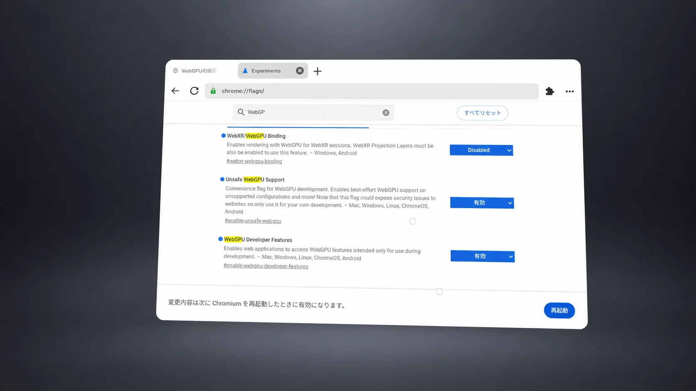
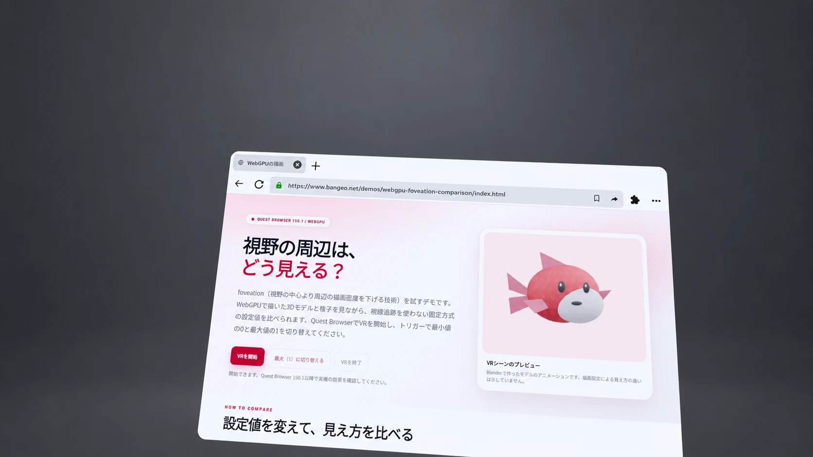

QUEST BROWSER 150.1 / WEBGPU
視野の周辺は、
どう見える？
foveation（視野の中心より周辺の描画密度を下げる技術）を試すデモです。比較したい設定を下から選び、Quest BrowserでそれぞれVRを開始してください。VR中にコントローラーを操作して設定を変える必要はありません。

BEFORE YOU START
Quest BrowserでWebGPUを有効にする
このデモのVR描画には、Quest BrowserのWebGPUとWebXRでのWebGPU連携が必要です。VRを開始できない場合は、次の設定項目を確認してください。
- Quest Browserで
chrome://flagsを開きます。 - WebXR/WebGPU Binding と WebXR Projection Layers を検索し、それぞれ Enabled にします。
- 画面の案内に従ってQuest Browserを再起動し、デモを開き直します。
画像の「WebXR/WebGPU Binding」は撮影時には Disabled です。有効化前の画面例としてご覧ください。「Unsafe WebGPU Support」と「WebGPU Developer Features」は撮影時に有効でしたが、このデモに必須とは確認できていません。

chrome://flags。画像では「WebXR/WebGPU Binding」が無効になっています。HOW TO COMPARE
2つのページで見え方を比べる
01
設定を選ぶ
最小設定（0）か最大設定（1）のページを開き、Quest Browserで「VRを開始」を押します。
02
3Dモデルを見る
視野の中央と左右に置いた魚型モデルの模様を見ます。背景の同心円や格子は表示しません。
03
もう一方も開く
VRを終了して比較ページに戻り、別の設定を開きます。Questの機種とBrowserのバージョンも記録してください。
このデモは視線追跡を使いません。0はAPIで指定できる最小値で、描画処理が完全に無効になるとは限りません。見え方の違いはヘッドセットで確認してください。
ON QUEST
Quest Browserで開いた画面
